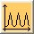
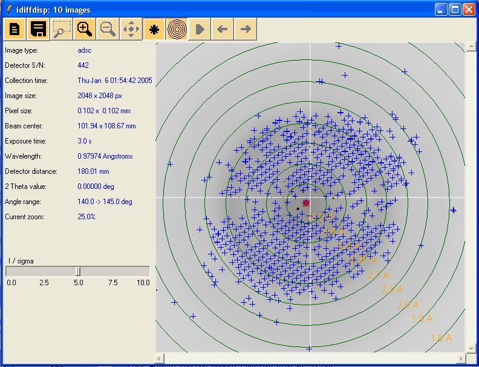

idiffdisp - CCP4 Diffraction Image viewer
idiffdisp is a tcl-tk application that displays diffraction images, their standard header information and some useful calculations. It relies on the tcl module of the Diffraction Image library. The window of idiffdisp is divided in 3 parts: The toolbar, the information panel on the left, originally containing the header information and the zoom level and the image on the right. At the bottom of the information panel is a small status bar that show which pixel the mouse is on and what is the resolution at that particular pixel.
Let's quickly explain the toolbar.
|
Open menu: Let you open a single image, a maximal image from a sector or make a movie sequence out of a sector. Also give you the possibility to reopen recently opened image/sectors. |
|
|
|
Save menu: Let you save a single image or a maximal image to jpeg format or save a movie sequence as a gif file. This require image magick convert program to be installed. |
| Zoom Box: Let you specify which part of the image you want to zoom on, the mouse wheel then let you adjust which zoom level you want. In Movie mode this will apply the zoom on all frames. On Linux use the mouse wheel to adjust zoom level, on windows or if you do not have have a wheel use keyboard keys + and - to adjust the zoom level. | |
|
Zoom in and out: from a range of zoom, currently 10%, 25%, 33%, 50%, 100%, 200%. |
|
|
spots finding: Show/Clear spots found on the image, the original I/sigma value is 2.0 but as soon as this option is on. A slider will appear on the left panel to let you adjust the value as shown with the maximal image screenshot below. |
|
|
Resolution circles: Show/clear resolution circles calculated for the image of maximal image. |
|
|
Play: Play the movie sequence, only available in movie mode. Note that in movie mode similarly to the I/sigma slider. Two slider appears on the left panel. The first one let you specified the inter frame delay and the second let you slide through your frames. Further to these slider a checkbox appear to let you choose if you want the movie to rollback or not. |
|
 |
Profile: Press once on the button to have the change to choose two points on the
image to see the profile on a plot where inter peaks distance |
|
Previous/Next: In image mode, these will open the previous/next image in directory. In movie sequence mode this will display the previous/next frame. |
|
Open a configuration windows in which you can set your choice of colours for various things on the interface (for example: resolution circles) |
|
Open a web browser showing this document. |
Below you can see an example of a maximal image with spots and resolution circles
Next is an example of the profile button in action, the line is shown on orange and the plot appears as soon as you selected your end point.
And here is a screenshot of a sector opened in 'movie' mode. You then can see the two sliders and roll back button appearing at the bottom of the left panel
Finally, here is an example of a saved movie sequence done with the option save as gif.
{kind=link}